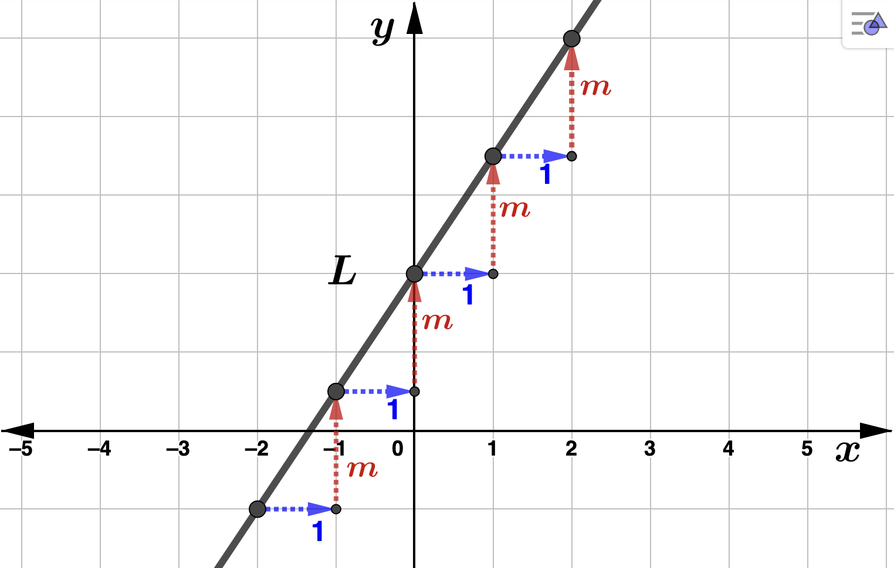
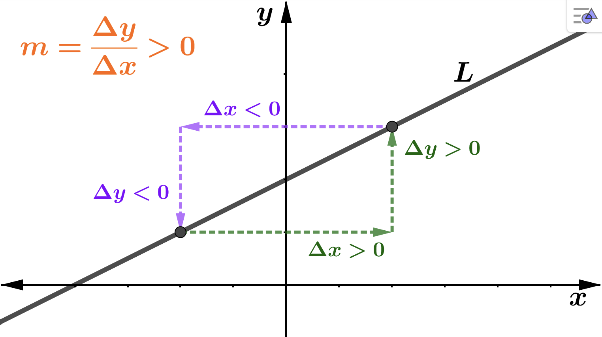
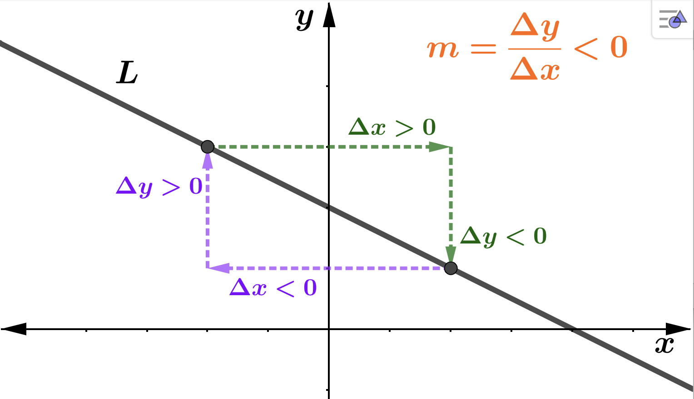
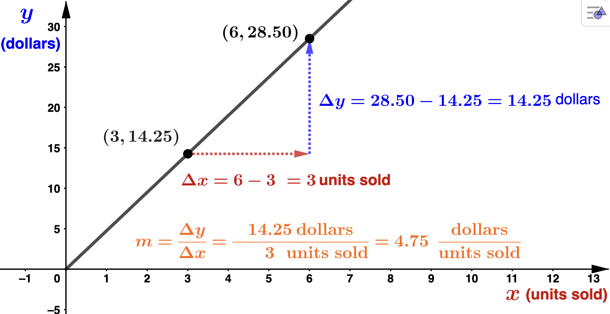
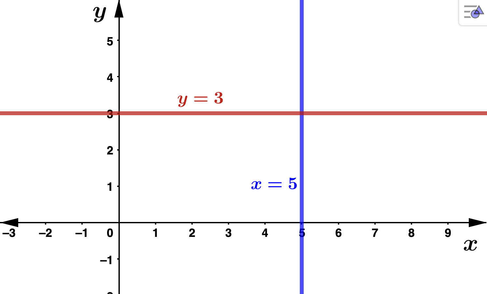
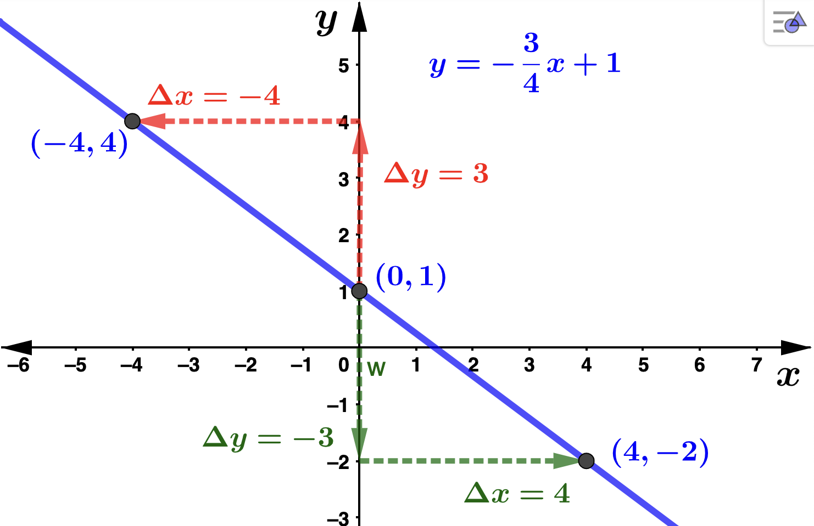

Section 1.2 Equations of Lines
Subsection 1.2.1 Standard Form
The standard form of a line is given by \(Ax+By =C\) where \(A,B,\) and \(C\) are real numbers and \(A\) and \(B\) are not both 0. Notice that the line \(L\) in our previous example was given in standard form.
- When \(x=1\text{,}\) we have \(y=2(1)+2=4\) which gives the point \((1,4)\) on \(L\text{.}\)
- When \(x=0\text{,}\) we have \(y=2(0)+2=2\) which gives the point \((0,2)\) on \(L\text{.}\)
- When \(x=-1\text{,}\) we have \(y=2(-1)+2=0\) which gives the point \((-1,0)\) on \(L\text{.}\)
Subsection 1.2.2 Slope of Line
Slope is a measure of the steepness of a line and is constant per unit change in the horizontal direction. We denot the slope with the letter \(m \text{.}\) That is, if you move 1 unit to the right in the horizontal direction, then moving \(m\) units in the vertical direction will get you to another point on the line. In the figure below notice that \(m > 0 \) since we have to move up in the vertical direction as we move to the right in the horizontal direction.

Definition 1.2.2.
Let \((x_1,y_1)\) and \((x_2,y_2)\) be any two distinct points on the line \(L\text{.}\) Then the slope, denoted \(m\text{,}\) of the line \(L\) is given by
\begin{equation*}
m = \frac{y_2-y_1}{x_2-x_1} = \frac{\Delta y}{\Delta x} = \frac{\textrm{rise}}{\textrm{run}}
\end{equation*}
Notice in general that
-
\(m > 0 \) if and only if \(\Delta y \) and \(\Delta x \) have the same sign if and only if the line rises from left to right 
-
\(m < 0 \) if and only if \(\Delta y \) and \(\Delta x \) have opposite signs if and only if the line falls from left to right 
In applied mathematics, the variables in an equation or function (which we will get to later) are assigned a meaning. In this case, these equations or functions are called mathematical models. For example, equations representing a company's revenue, cost, and profit are often referred to as models.
Example 1.2.3.
2 points on this line are \((3,14.25)\) and \((6,28.50)\text{.}\) So,
\begin{equation*}
m = \frac{28.50-14.25}{6-3}= \frac{14.25}{3} = 4.75.
\end{equation*}
Notice that we can assign units to the slope in this problem: \(\frac{\textrm{dollars}}{\textrm{units}}\text{.}\) This helps us see the slope of a line as a rate of change, an important concept in calculus. In this problem we now see that this company makes $4.75 per each additional unit sold. The graph is below. 
Subsection 1.2.3 Special Lines
- Horizontal lines: Every point on a horizontal line has the same vertical coordinate regardless of the horizontal location. If we say this common \(y\) coordinate is \(b\text{,}\) then the horizontal line has equation \(y=b\text{.}\) Note that the slope of any horizontal line is \(m=0\text{.}\) Below is an example with \(b=3\text{.}\)
- Vertical lines: Every point on a vertical line has the same horizontal coordinate regardless of the vertical location. If we say this common \(x\) coordinate is \(a\text{,}\) then the vertical line has equation \(x=a\text{.}\) Note that the slope of any vertical line is undefined. Below is an example with \(a=5\text{.}\)

Subsection 1.2.4 Slope-Intercept Form of a Line
Suppose a line has slope \(m\) and \(y\)-intercept \((0,b)\text{.}\) If \((x,y)\) is any other point on the line then
\begin{equation*}
m = \frac{m}{1} = \frac{y-b}{x-0}
\end{equation*}
Cross multiplying and solving for \(y\) we get
\begin{equation*}
y = mx + b
\end{equation*}
This is called the slope-intercept form of a line. In this context, we call \(x\) the independent variable, or input variable and \(y\) the dependent variable, or output variable. Using this language and recalling Definition 1.2.2, we can interpret the slope as the change in ouput per the change in input. For instance, if the slope of a line is \(m = \frac{3}{4} = .75\) we say the output increase by 3 units as the input increases by 4 units. Equivalently, this means the output increases by .75 units as the input increases by 1 unit. Recalling Example 1.2.3 in which we found \(m=4.75\text{,}\) we can say this company's revenue (the output) increases by $14.25 as the number of units sold (the input) inreases by 3. Equivalently, the company's revenue (the output) increases by $4.75 as the number of units sold increases by 1.
Example 1.2.4.
We rewrite this in slope-intercept form to get \(y=-\frac{3}{4}x +1\text{.}\) So, the slope is \(m=-\frac{3}{4}\) and the \(y\)-intercept is \((0,1)\text{.}\) Starting at \((0,1)\text{,}\) to get to another point on the line we can move up 3 units then left 4 units to get to the point \((-4,4)\) or down 3 units then right 4 units to arrive at the point \((4,-2)\text{.}\)

Example 1.2.5.
We are given the point \((2,30)\) and slope \(m=4\text{.}\) The line has the form \(y=mx+b\text{,}\) and substituting \(m=4\) we have \(y=4x+b\text{.}\) We can solve for \(b\) by substituting \(x=2\) and \(y=30\text{.}\)
\begin{align*}
y \amp = 4x + b \\
30 \amp = 4(2) + b \\
b \amp = 22
\end{align*}
The desired line is \(y=4x +22\text{.}\) For homework, find the cost of producing 15 items then graph the line.Subsection 1.2.5 Point-Slope Form of a Line
If \((x_1,y_1)\) is a fixed point on a line \(L\) and \((x,y)\) is any other point, then
\begin{equation*}
m = \frac{m}{1} = \frac{y-y_1}{x-x_1}
\end{equation*}
Cross multiplying we get
\begin{equation*}
y-y_1 = m(x-x_1)
\end{equation*}
This is called the point-slope form of the line \(L\text{.}\)
Example 1.2.6.
First we need the slope. Find it for homework. You should get \(m=-\frac{8}{5}\text{.}\) Now we can use either point to work with, say \((-1,2)\text{.}\)
\begin{align*}
y-y_1 \amp = m(x-x_1) \\
y-2 \amp = -\frac{8}{5}(x+1) \\
y \amp = -\frac{8}{5}x + \frac{2}{5}
\end{align*}